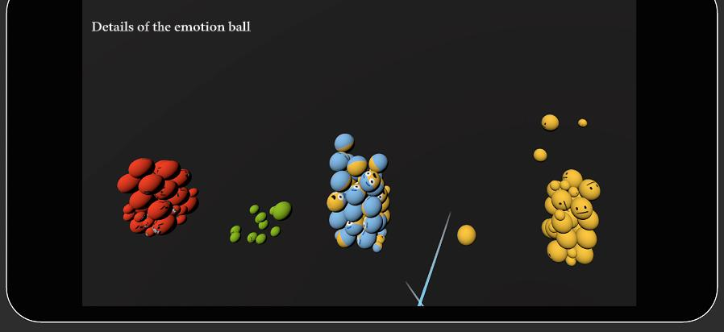

National News Sentiment Dynamics Analysis
Introduction
This feature module is an interactive upgrade based on an emotion bar chart. When a user clicks on an emotion tag, the system automatically filters and displays news summaries related to the selected emotion type.
These news summaries are presented in a dynamic carousel format. Users can customize the carousel playback time, click on the summary panel to view news details, and the details page will highlight keywords in the news to assist users in quick reading. After viewing the details, users can exit the reading mode by clicking the button in the top-right corner of the details page and return to the news summary carousel mode.
FEffect demonstration
Core Design
Emotion chart generation trigger logic
By detecting the secondaryButton (B) on the right controller, combined with the current ray-hit country index countryHighlightedIndex and start/end time startTime–endTime, the emotion histogram prefab emotionHistogramPrefab is instantiated.
Ball Generation and Dynamic Adhesion Mechanism
Call the SpawnEmotionBalls() coroutine to iterate through all filtered news entries, generate one Top1 and one Top2 emotion ball for each news item, and call SpawnBall() to set their position, scaling, rigidbody properties, bounce material, and column adhesion behavior. The adhesion process simulates three stages: floating, hovering, and free fall, ultimately embedding into the corresponding emotion's StackBase to achieve physical stacking.
UI Notes
-
Press the
Bbutton when the ray highlights a country to trigger the creation of the emotion histogram. Visual feedback includes the dynamic creation and classification of emotion balls. -
Users can place the analysis panel in any spatial area for convenient comparison and analysis of multiple panels.
-
Users can close any emotion column chart. When the ray points to any area of the panel, pressing the
Xbutton destroys the current panel and removes the record from the list.
Right Joystick Country Interaction Trigger
Left and Right Joystick Drag and Drop Placement
Left-hand Controller Ray + X Button Interaction
Emotion Chart Field Description
| Control | Content |
|---|---|
emotionHistogramPrefab |
Emotion histogram prefab, includes seven emotion categories with corresponding StackBase nodes as target anchors for emotion balls. |
countLabels |
Count labels displayed on top of each emotion bar, showing the cumulative number of news articles per emotion category. |
joyPrefab, angerPrefab, etc. |
Represent the seven emotion types (Joy, Anger, Sadness, Fear, Surprise, Disgust, Neutral), each with a dedicated prefab. |
Case Study
Emotional Classification Comparison of the Involved Countries
Using the national news sentiment analysis function, we designated the key time period from April 7, 2025, to April 12, 2025, and found that the top three sentiment categories for news related to China and the United States were: neutral, afraid, and angry. However, the total volume of news reports in the United States was far higher than that in China, with a significantly larger number of accumulated small balls.
April 7 :
Trump refused to suspend tariffs, threatened further increases, and triggered a global stock market plunge.April 9 :
China formally submitted a request for new round of tariff dispute consultations to the World Trade Organization and began imposing additional retaliatory tariffs on US goods, drawing international attention.April 8–10 :
The US initially imposed “Liberation Day” tariffs (10% baseline, increasing to 34%–125%), and China subsequently announced retaliatory tariffs of 34%–84% on US goods.
We can observe :
Given the significant disparity in volume, we speculate that within the U.S. media ecosystem, the news dissemination chain is longer (involving multi-level reposting and regional channel rebroadcasting), leading to the same emotional content appearing multiple times (during data preprocessing, we identified issues of identical content being reposted multiple times); in contrast, Chinese media coverage is more focused on policy announcements and official statements, resulting in lower repetition rates and consequently fewer news sentiment spheres. Additionally, this is closely related to the crawling of the news dataset. Due to restrictions on the websites we crawled, the news websites we crawled were not comprehensive, leading to a skewed representation in terms of quantity.